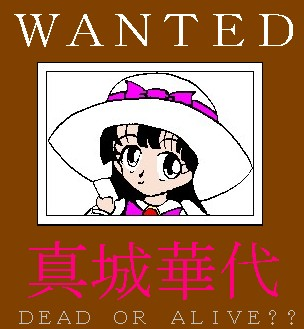
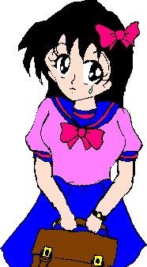
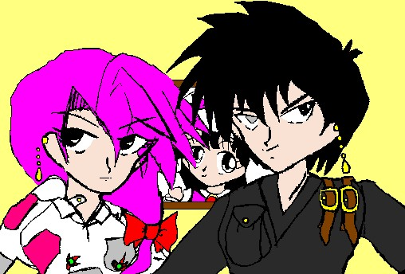

戻る
華代ちゃんシリーズ番外編
「華代ちゃんの家に遊びにいこう！！」
作：Ｚｙｕｋａ
※ 「華代ちゃん」シリーズの詳細については、以下の公式ページを参照にしてください。
http://www.geocities.co.jp/Playtown/7073/kayo_chan00.html
※ 「華代ちゃんシリーズ・番外編」の詳細については、、以下の公式ページを参照にしてください。
http://www.geocities.co.jp/Playtown/7073/kayo_chan02.html
※「いちごちゃん」シリーズの詳細については、以下の公式ページを参照して下さい。
http://www.geocities.co.jp/Playtown/7073/Novels-03-KayoChan31-Ichigo00.htm
俺は「ハンター６号」。
不思議な力で "お客さん"
を性転換してしまう超常能力者、「真城 華代」の無害化に向けて日夜努力している。
とある仕事で……その「真城 華代」がらみの仕事で、兎の性転換に巻き込まれてしまった俺は、ウサ耳尻尾つき赤目のバニーな少女になり、「半田 りく」と名乗ることになってしまった。
…元に戻れない、と同僚のハンター達は言うが、俺はあきらめていない！！必ず元に戻ってやる！！
そのために、今回の作戦は……
「すいませんねぇ、うちは確かに『真城』だけど、そんな子はいないわ」
「そうですか、すいません」
りくは丁寧に挨拶し、その家を後にした。
「ここも×、か…」
電子手帳を取り出し、膨大な資料の中の一つにチェックをつける。
今のりくの手荷物は、この電子手帳と携帯電話、着替えと日用品（＋生理用品）の入ったリュック、そして…節約することを条件に組織からもらった、経費用の銀行通帳だった。
これらを手に、りくは日本中の『真城』という姓を持つ家をしらみつぶしに当たっていたのだ。
理由は簡単、
「真城華代の家、必ず見つけ出す！！」
だった。
「華代って、まだ子供だよな…？」
事の発端は何気ない日常の会話からだった。
「そうだよなぁ。どう見ても、７、８歳くらいだったし」
りくの言葉を受けたのは、同僚のハンター５号だ。
「だったら、家があって家族がいるのじゃないか？」
「はあ？」
同室にいた美貌のハンター仲間、３号（れっきとした女性）がすっとんきょうな声をあげる。
「あんなとんでもない怪物に家族なんかいると思うの？いるとしたら、どんな家族よ？」
「いや、そうとはかぎらない」
頭から否定した３号に、ハンター７号が反論する。
「不思議な力を持った人間は、その力のみを見られがちだ。ともすれば、その力がその人間のすべてだと思われてしまう場合がある。だが、あえてその力を無視し、別の方面から見れば…その人間の違ったところが見えてくる時がある。たとえば…」
そう言って、右目のカラーコンタクトを外す７号。
「見てのとおり、僕の両目は色が違う。そして、この右目は他人には見えないものを見ることができる。子供の頃はこの力だけを見られ、それが僕のすべてだと思われていた」
「…なんか、重い話になってないか？」
「フフフ…」
５号の言葉に、すこし自嘲気味に笑う７号…
「そんな僕を慰めてくれたのが、妻の紫鶴だった」
「あん……？」
「そう、紫鶴は僕を救ってくれた！銀色の目だけじゃない、別の僕を見てくれた！紫鶴が、紫鶴こそが！！」
「ハイハイ、ななちゃんはそれが始まったら長いのだから。すこし黙っていて」
３号が、７号の肩をポン、とたた…く前に、７号はとてつもない勢いで逃げだした。
「ち、ちょっと…３号先輩。僕は妻帯者ですよ！そういう冗談、やめてください！！それに、僕はななちゃんじゃなくて７号です！！」
「…いいじゃない。女になったあなたの姿を奥さんに見てもらえば」
３号は、その体に触れた男性を、女性の姿に変えるという特殊能力の持ち主である。それは、かつて真城華代と接触した際、３号の意思とは関係なしに授かってしまった物だ。
「よくないです！！」
「話しをつづけていいか？」
りくは、同僚達の様子を見ながら言う。本当に、こいつら選りすぐりのエリート集団なのだろうか？りくの気分を表しているかのように、ウサ耳がだらりと下がった。
「とにかく、華代から特殊能力、性転換能力などの超常能力を除けば、普通の女の子ってことになる。だとしたら…どこかに家があって、家族がいたとしても、おかしくはないわけだ」
そう言って、りくは立ち上がる。座っていたときには見えなかった、尻尾がゆれる。
「どこかいくの？」
「探してみようと思うのだ。華代の家を、ね」
「はあ？どうやって？」
「華代の居所くらいなら、僕の目を使えばわかるけど……」
７号がまだ裸眼のままになっている右目を指差し、言う。
「いや、しらみつぶしに探してみようと思う。ちょっと、思うところがあるのでね」
もしかしたら、その家族は華代と同じ力を使えるかもしれない。そして、その家族に「常識」があれば…もとに戻れるかもしれないのだ。
りくの気分を表すように、ウサ耳がピンッと立った。
「そういえば、いちごちゃんはどうしたのだろう？今日は見ないけど」
「また引きこもっているのでしょ」
「ここも違ったか…」
おもいっきり目立つウサ耳を山高帽で隠し、全国各地の『真城』姓の家を片っ端から当たっているが、なかなか本命に当たらない。
もう何日、こんなことをしているのか……？
「ま、あるかないかもわからない物を探しているのだから、苦労するのも仕方ないか」
携帯のメールで、本部に簡単な報告を送る。
答えは帰ってこない。日に一度、向こうから定時連絡がくるだけだ。
それもほんのちょっとだけ……
周りに見える高層マンションが、どこか寂しげだ。
「…華代の名前を呼べば、答えてくれるかも…」
ふと、そんなことを思ってしまう。
「……やってみるか」
フウ…と一息つき…
「華代ちゃーん、遊びに来たよーーー！！」
他に言い方はなかったのだろうか？
「まあ、これで見つかったら苦労しないのだけどな」
笑顔でそういうりく。だが…
「はーーーーーい！」
「え・・・？」
どこからともなく、答える声が聞こえてくる。
「……？」
あたりの景色が一変する。
今までは、高層マンションが乱立する都市部にいた。しかし、今はのどかな田園風景広がるさわやかな世界の中にいる。まるで、童話の中に入ってきたみたいだ。
「……！？」
そして、目の前にかわいらしい家がある。その家の表札は…『真城』…！！
「ま、まさか…」
ギィ…
家のドアが空く。
「お、おい、まじかよ…」
家の中から、小学生低学年くらいの、かわいらしい少女が現れる。
「こんにちわ！遊びにきてくれてうれしいです！」
真城華代は、半田りくの手をとった…
「よいしょっと…これでいいかな？」

ハンター７号は、本部の壁に、一枚のポスターを貼り付けていた。
「何しているのだ？７号？」
そこへ、かわいらしい声がかかる。
「あ、いちご先輩。引きこもりはもう終わりですか？」
「うるさい」
半田いちご…ハンター１号の愛称である。彼女…元は男だったが、りくと同じく、華代被害にあってしまい、女子高生ぐらいの少女に変えられていた。
トン…と小さな音と共に、７号が台から降りる。その後ろのポスターが、いちごの目に入る。
「……え……！？」
いちごの目が大きく開かれる。
「……！！華代！！！」
「さすが、わかりますね…そのとおり、真城華代のポスターです」
そこには、ＷＡＮＴＥＤの文字と共に、にっこりと笑う華代ちゃんの写真がはってあった。
「ど、どうして、こんな物があるのだ！！この写真、誰が撮ったのだ！？」
「僕ですよ」
７号は笑っていう。
「どうやって…？」
「僕の得意技は知っているでしょ…悪知恵ですよ……」
「……なんだって……？」
「フフフ……」
７号の顔に、邪悪な笑みが浮かぶ……
「……３号先輩に頼んで、他のエージェントの体をさわってもらったのですよ『華代ちゃんそっくりな女の子になあれ』って言ってもらってね！」
「はぁ、そんな方法で！？」
「いやあ、誰も考えつかないことを、考えるのが僕の得意技！」
７号が笑う。自分の体を使わないのが、７号の悪知恵の"悪い"部分だ。
「まあ、これで、前に５号先輩がやった、華代の顔がわからない、なんて失敗はなくなるでしょう」
「ハハハ…お前って、むちゃくちゃなこと考えるな」
「フフフ…元ＦＢＩの超能力捜査官と言う肩書きは伊達じゃありませんよ」
そう入って、７号は持っていたバッグから、数枚の写真を取り出した。
「焼き増しした物です。どうです、一枚５１２円、買いません？」
「調子に乗るな！」
ポコッ！
いちごのゲンコツが、７号の頭をたたいた。
「いったぁ……」
パサ…
と、７号のバッグから、別の写真が滑り落ちた。
「これは…？」
「あ…あ。それは……」
「……………」
いちごは無言……だが、空気は徐々に重くなる……
「なあ、７号…」
「ハイ……」
「お前、何でこんな写真も持ってるんだ？」
それは、いちごが前に女子高に、通っていたときの写真だった……
「……あの、一応いいわけはあるのですけど、きいてくれます？」
「いいや……」
フウと一呼吸。
「ぶんなぐる！！」
ダッシュで逃げる７号。
「待てっ！！」
いちごは追いかけた。
ハンター仲間がこんなことして遊んでいる頃…６号ことりくは、けっこうピンチだった。
そして、こちらでも……
「ねえ、何して遊ぶ？おいかけっこ？」
華代の部屋の中…それは、想像していた物とは違った。ごく普通の、小学生低学年の少女の部屋、だった。机の上に、宿題ではなく作りかけの名刺がおいてある、というところが華代らしい。
りくには、ちょっと狭苦しく感じられた。
「ええ…？ちょっと？」
「決まりね！」
「待ってーうさぎさーん！」
「うわっと！！」
エプロンドレスを着た華代が、不思議の国で首から時計をぶら下げたりくを追いまわす。大人と子供の体格差がある上、ハンプティダンプティやトランプの兵隊が邪魔するのでなかなか捕まらない。
「…なんか…眠くなってきた……」
華代との差がだいぶあいたとき、りくは猛烈な睡魔に襲われた…遠目に見える華代は、なぜか亀のぬいぐるみを着ている。
「寝ちゃ駄目だ、華代に捕まってしまう…捕まったら…捕まったら……」
どうなるのだろう？よく考えれば、華代に捕まっても、そこでこの追いかけっこが終わる…それだけではないのだろうか？でも、りくの中には漠然とした不安があった…
どうにか睡魔を克服し、再び立ち上がるりく…華代ちゃんとの距離は、その間もかなり縮まってしまっている。
「くう…！」
満月をバックに、ぴょんぴょんと跳ね回るりく。それにより、華代との差は再び開く…しかし、彼女は気づいていないが、とっくに華代の能力にとらわれていたのである…
華代から逃げ回るごとに、少しずつ、彼女の体は変化してゆく……
「おい５号！！７号がこなかったか？」
どうやら、こっちの追いかけっこも苦戦しているらしい。
いちごは、廊下でばったり会った５号に問い詰めた。
「どうしたいちご？そうだ、一緒に食べないか？」
５号は５５５のライダー軒印の肉まんをほおばっている。まあ、別にそれはいい。
「７号がこなかったかと聞いているんだ！！」
「いや、別に」
「そうか！！」
いちごはそういうと、再び走りだした。
「……何やったのだ、７号？」
いちごが走り去ってしばらくして、５号は真上に向けて声をかけた。
「……別にどうでもいいでしょ。とにかく、助かりました。５号先輩」
クル、ストン！
張り付いていた天井から一回転して降りてくる７号。
「まるで忍者だな」
「まあ、確かに忍者の知り合いはいますよ」
「へえ」
別段驚きもしない５号。
「じゃ、僕はりく先輩への定時連絡がありますので、失礼します」
「お、がんばってね！！」
そして７号はいちごが去った方とは逆の方へ歩き出した。
そして５号は、新たに餃子を口にしたのだった。
ザッパーン！！
木で作られた船に乗ったりく、そして、狸の来ぐるみを着て泥舟に乗った華代…二人の追いかけっこは、なぜか川くだりになっていた。
「あっ！！」
いともあっさりと、華代の泥舟は崩壊した。
「きゃあ！！」
川に投げ出される華代。
「ちぃ！！」
りくは華代に手を伸ばし、船に引き上げる。簡単そうに見えたそれは、とてつもなく大変な作業だった。
場面が変わる。そこは、華代の家の、華代の部屋の中だった。……最初に入った時とはちょっと変わった感じがする…なぜだろう……？
「捕まえた、りくちゃん！」
りくの手を握り締め、うれしそうに微笑む華代…その顔は、自分と同じ高さにある。
「あ、あれ…あ……まさか！！」
最初、狭苦しく思えた空間が、今はちょうどいいくらいに感じられる。そして、自分よりずっと背の低かったはずの華代が、今は同じぐらいに見える。
「もう、ハンデはないよね！」
ハンデがない…最初は、ハンデがあった！？
結論は、すぐに出た。でも、確認したくない…
自分が縮んだ……
体を見下ろす。大きかった胸はぺったんこになり、体の凹凸は失われている。手も足も、短くなっている……
「か、鏡…」
その舌っ足らずな声は、女性化してしまったときよりも違和感がある。
「洗面所にあるよ」
華代につれられていった先で見たものは…すっかり縮んでしまった自分の姿だった。だが、ウサ耳と尻尾は残っている。
「うそ……」
華代ちゃんと同年代…そう、７、８歳ぐらいの少女になったりく…それは、華代ちゃんのお友達の姿だった。
「じゃあ、次はりくちゃんが追いかける番ね！」
華代ちゃんは無邪気に笑った。
「で、変わり果てた姿になって帰ってきたってわけか」
「そうらしいです」
ハンター７号は"よい子の帰宅時間"、5時に本部に"帰宅"した６号の報告を、ボスに伝えていた。
「６号も災難だな。バニーガールになったと思ったら、今度は女子小学生か…」
「ウサ耳尻尾つきのね」
なぜそれが取れないのだろうか…？けっこう不思議だ。
「今はどうしている？」
「桃香が自主的に付き添って、寝室に入りました。よい子は寝る時間ですから」
「桃香…？安土桃香君か。珍しいな。安土君が自ら行動を起こすとは」
「今の６号先輩の姿が、"つぼ"だったらしくてね…それに……報告していいのかどうかわかりませんが……」
「なんだ？言ってみろ」
「華代と、明日も"遊ぶ"約束をしたらしいのです」
「……！！何！！来るのか、華代がこのハンター本部に！？」
ボスの脳裏に、３号が起こした事件が浮かぶ。今度は、その被害の比ではない。
「大丈夫でしょ。彼女は"仕事"と"遊び"はわけて考えているらしいですから」
「ほ、本当だろうな…」
冷や汗が、ドバッと流れる。
「それに、華代が６号先輩と遊んでいれば、"仕事"をする時間が減るのじゃないですか？まあ、憶測ですけど」
「…逆に、"セールスレディごっこ"とか言って、手伝わされるのじゃないか？」
「ああ、ありえますね」
二人とも、口調は穏やかではあるが、内心はぐらぐらだ。ただ、ちょっと理由は違うが。
「ではもう下がってくれ、７号」
「はい、では失礼します」
７号が出て行ったことを確認したボスは、窓際に立つ。
「真城華代…我々はまだあきらめたわけじゃないぞ…」
「失礼、ボス！！」
と、そこに今さっき出て行ったはずの７号が駆け込んできたではないか！！
「え、お、おい、どうした？」
「いや、ちょっとね」
ガラガラガラ！！
７号は窓を全開にすると、バッ！！と飛び出す。
「おい、こら７号！？」
ボスの静止も聞かず、そのまま屋根の上を走って行く７号。
「待てっ！！こらっ！！」
間髪をいれずに司令室に飛び込んできた者がいる。もちろん、我らがヒロイン、いちごちゃん！！
まだいちごと７号の追いかけっこは終わってなかった。
開いた窓から流れ込んできた風が、ボスの髪を揺らした。
（了）
おまけ・噂の人が来た
ぴょこぴょこ……
ハンター本部にあるしげみの中を、二つの黒いウサ耳が移動してゆく。真城華代によってオコチャマバージョンにされてしまったハンター６号こと、りくだった。
こんなところでりくが何をしているのかと言えば、ある物を探しているからである。
そのある物とは……『華代効果相殺機』である。
あの日、華代の力によって小学生にされてしまった自分…だが、今回は過去にバニーにされた時とは違う！！あの時は兎が元に戻りたがらなかったので、"ついで"に変化した自分も元に戻れなかった。しかし、今回変化したのは自分だけ……これなら相殺機で元の姿……は無理でも、前の大人のお姉さんぐらいには戻れるはずである。
でも……反対した人物達がいた……
『相殺機って、かなりエネルギーを使うの！だから、他の被害者のために使わなきゃ。あなたはハンターでしょ。我慢しなさい！！』
３号である。
『いいじゃないこのままで、むちゃくちゃかわいいもの』
水野さんである。
『ええーーーせっかくいちごちゃんとは違ったかわいさのあるのにもったいないよ！！』
沢田さんである。
『りくさん………かわいすぎる！！絶対にもとに戻しません！！』
後輩の事務員、桃香である。彼女が一番のクセモノ……
「あいつら人事だと思って…」
あとの仲間、いちご、５号、７号は…ノーコメントだった。ようは、女性達の意見に反論してくれなかったのだ。
さらに、大本の相殺機もどこかへ隠されてしまった。
ブウウウ……ン
軽快な爆音とともに、一台のバイクがハンター本部の前に止まる。
厚いジャケットを着ているが、そのボディラインから見て、乗り手は女性らしい。
「フウ…」
ため息とともに、フルフェイスのヘルメットをとる。中から現れたのは、輝くばかりの美貌を持つ美女だった。ハーフだろうか？髪の色は紫色だ。
「ここね…秘密組織と言う割に、あっさり見つかったわ」
美女は、組織の玄関に向かって歩き出す。と、玄関のそばにあるしげみに、妙な物を発見した。
「兎の、耳？」
ぴょこぴょこ。
いうまでもなく、りくである。
すたすたすた。
警戒心よりも好奇心のほうが強い美女は、それに近づいてゆく。そしてそれがウサ耳をつけた子供だとわかるのに、時間はかからなかった。
「…あなた誰？こんなところで何をやっているの？」
「え…いや…その…」
美女は、りくをまじまじ見つめる。
「それ、コスプレってやつ？最近じゃ、小学生まではじめたのね…」
「いや、違う…」
りくは、この女性とは初対面だ。だから、どのように説明すればいいのかわからない。第一、何で一般人がここにはいってこられるのだ？
「あ…！」
救いの主は、玄関から出てきた一人の少女だった。この組織の事務員の一人、安土桃香だ。玄関前の来客を見て出てきたのだろう。
「紫鶴さん、お久しぶりです」
桃香は、来客を見てペコリとおじぎをした。
（紫鶴？）
りくは頭の中でその言葉を反芻する。誰だったか…どっかで聞いたことがあるような……？
「あ、桃香！うちの亭主、いる？」
紫鶴…そう呼ばれた女性は、そういう。
（亭主…ってまさか！！）
「７号さんですね、はい、います」
そう答える桃香…間違いない。
「ああーーーーー！！７号の嫁さん！？」
りくは思わず大声を上げた。
「あ、りくさん、そんなところにいたのですか！」
桃香はりくを抱き上げる。一見か弱そうだが、成長期前の少女を抱きかかえるくらいの腕力は持っているみたいだ。
「…失礼な子ね。お嬢ちゃん、お名前は？」
「はい、りくちゃん御挨拶！」
「何で答えにゃならんのだ！！」
事情を知らない紫鶴ならいざ知らず、桃香はりくの本当の姿を知っているはず。ようはからかわれているのだ。
「安土、いいかげんにしろ！！俺は忙しいのだ！！」
「なんですって？」
丸眼鏡にみつあみ…おとなしそうな印象を受ける桃香。しかし、それは見た目だけである。
「桃香お姉ちゃん、でしょ？」
口に両親指を突っ込まれ左右に引っ張られるりく。かつてはこのくらいどうでもなかったが、今ではなぜか涙が出てくる。
「相変わらずね。桃香。さすがもと忍者！」
そんなことをやっていたのか？桃香？
「で、銀河はどこ？彼が忘れたお弁当、渡してあげなきゃならないのだけど」
銀河とは、紫鶴の旦那さん、ハンター７号の本名である。
「へぇー愛妻弁当ってやつですか？うらやましいですね７号さん！」
「ハハ、ま、昨日の残り物だけど…家計節約にね」
「そうですか…じゃ、案内します。ついてきてください」
そう言って、桃香はりくを抱いたまま歩き出す。
「お、俺は、忙しい！！」
「どうせ"相殺装置"を探すって言うのでしょ？駄目です。りくさんはこの姿が一番かわいいのですから！」
「それはお前の個人的意見だーーー！！」
少女の悲痛な叫びを、聞いてくれる人間はこの場にいなかった……
（終わり）
戻る
□ 感想はこちらに □